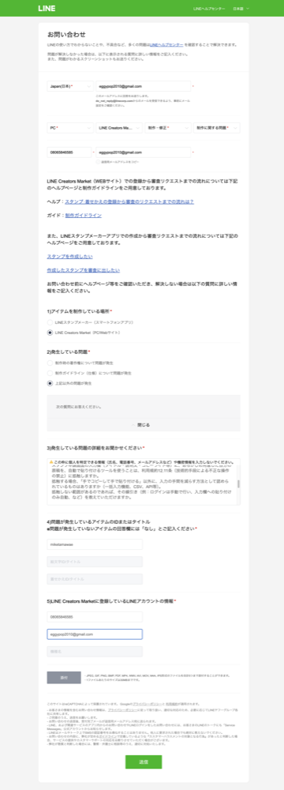

LINE問い合わせフォーム：文面を入れた状態（未送信）
開いた窓口：
https://contact-cc.line.me/serviceId/10569?continue_without_login=true
（creator.line.me経由の「ご意見・ご要望」ヘルプセンターから「お問い合わせフォーム」へ→ログインせずに続ける、で到達）
専用Chromeプロファイル（~/.tamago/chrome-line・CDP 9224）で開いたまま・
送信ボタンは押していません。
確認してください：
・電話番号欄「08065846585」は自動入力されたものです。ご自身のLINE登録電話番号と一致しているか確認してください（Claude側は入力していません）。
・お問い合わせ本文は、依頼いただいた文面を本フォームの項目構成（1〜5の質問）に合わせて自動で振り分けたものです。内容を確認のうえ送信してください。
